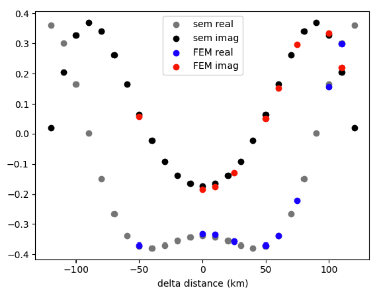
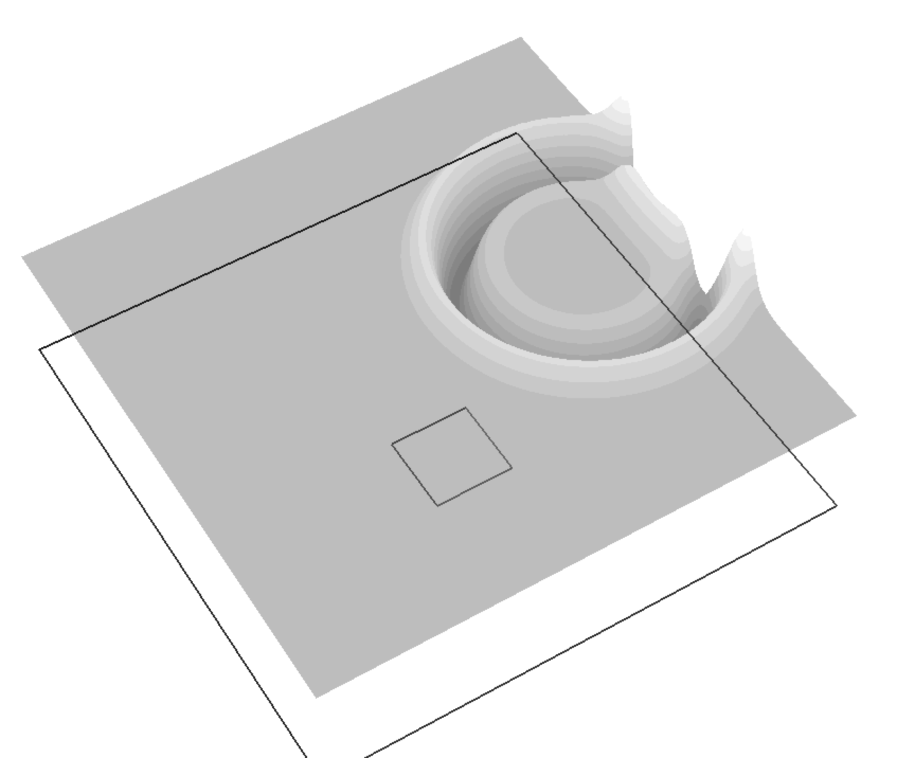
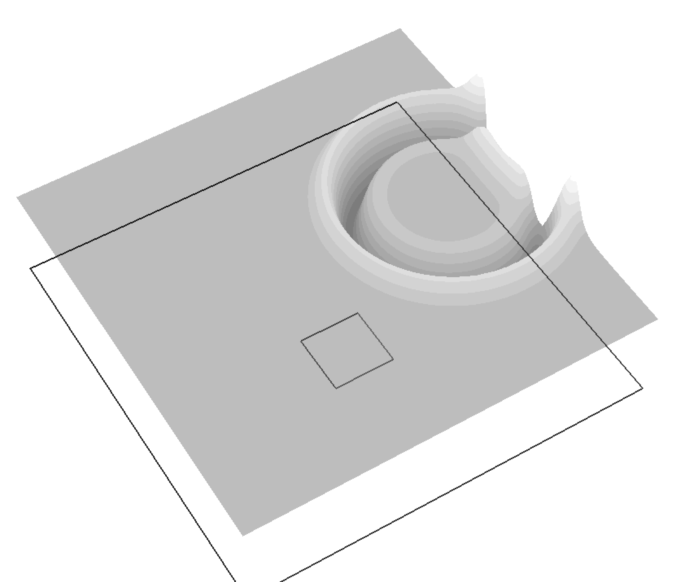
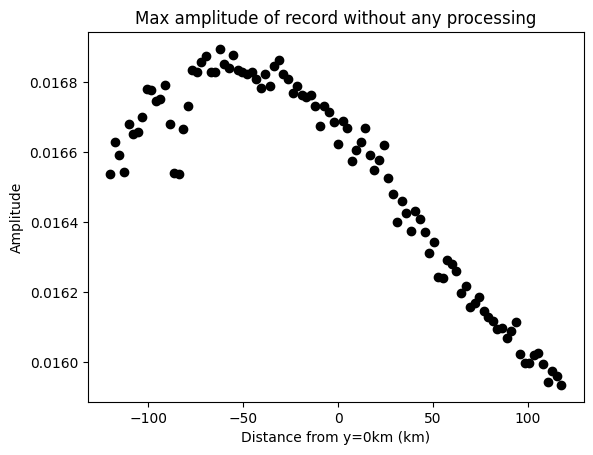
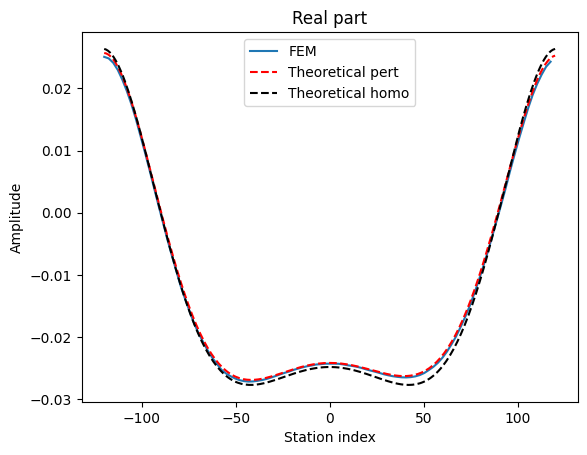
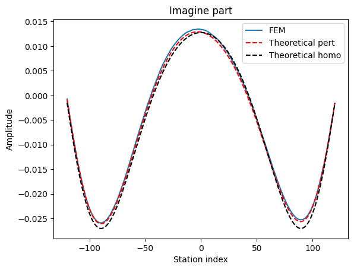

FEM vs T-matrix 结论: Tmatrix能做衰减
FEM
根据前面的经验,放弃了有限差分这条路,用FreeFEM软件完成有限元模拟.
通过均匀介质下的波场测试
首先测试了在均一介质下的模拟结果和理论值的差别, 发现有明显差异, 调整了以下参数未果:
- 网格划分的dx大小
- 网格划分的方式(方方正正的均匀网格 vs 空间上看起来比较歪歪扭扭的网格)
- dt的大小
- 狄拉克函数的近似方法(e/(x2+e2) vs 1/x)
- 狄拉克函数e/(x2+e2) 选取不同大小的e
- 震源时间函数乘以1e10, 做此操作是推测当时可能存在小数字的数值误差
最后发现影响的核心因素是基函数选取:参见FreeFEM官网文档
均一条件下的FEM和理论比较:

之所以能用SEM的作为参考, 是因为T-matrix实现过程中用了格林函数算理论值,二者完全一致,所以可以认为此处的sem结果是“正确答案”.
附上FEM参数:
- dx = 4 km
- dt = 0.1 s
- fm = 0.06 hz
- c = 3 km/s
- FreeFEM基函数 : P2b
至此该软件的可靠性得到了证明.
T-matrix 单区域测试
FEM区域划分和参数设置

- fm=0.06hz, T=16.7s, 波长=50km
- alpha=0.006, c=3, 衰减系数为alpha/(2c)
- 源到测线的中心的距离120km, 源(0,0)点
- 测线长度240km
- 衰减区域边长60km, 正方形, 左下角(90,0)点
FEM结果
- 波形没有数值频散,通过时窗选取去除边界影响
 
 - 频谱符合直觉,正半轴经过衰减的波的振幅看起来要低一点

- 对频谱求振幅谱看起来也是合理的

- 直接用最大振幅看起来也具有和abs相似的特征
- 对频谱求phase

对phase进行说明, 更细节参见网上FFT笔记:
越大, 在时间域体现出来的到时应该越滞后, 相当于整个波都往时间增大的方向平移了. 那么如上图5中的phase则是合理的, 从x=0往两边走, 震中距都是增大,到时增加, 相位也随之增加.
总总迹象表明, FEM的模拟是合理的.那问题很可能在Tmatrix的实现过程中.
T-matrix结果
实部和虚部经过不正当处理后能和FreeFEM结果对应上
不正当调整:
- 结果取共轭
- 结果颠倒顺序(实部和虚部都沿着y=0对称)或者改变dm的正负号, 二者均可达到相同的效果.
待求方程的时间域表达:
转到频率域:
即:
原T-matrix方法的 我觉得正确的dm应该是:
但是, 很遗憾, 这样算出来结果不对, 在本例中, 要强行调整成
正当调整
- 对T-matrix和FEM结果的绝对大小进行了放缩, 因为FEM模拟出来的结果, 虽说输入的是f(x,t), 但是源差个倍数. 但是出现了一个可能不正常的现象:
- 这个倍数似乎是频率依赖的, 我对0.06hz为主频的ricker考察f=0.06Hz时倍数为0.141, 0.1Hz时是0.164
为了知道上述的现象是否为巧合, 进行了第二次实验
模型

增加了一个alpha=0.01的更强衰减区域.
T-matrix结果
相同的调整策略再次奏效了


待解决问题
两个调整一定是“代码”,“理论”或者“测试”出现了问题, 需要找出来.